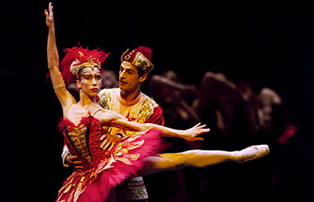
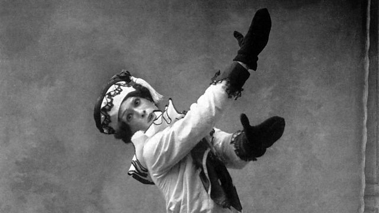

1. Los Ballets Rusos de Serguéi Diáguilev
Los Ballets Rusos fueron una compañía creada en París por Serguéi Diáguilev en 1909. Su objetivo era mostrar al mundo occidental la riqueza artística de Rusia. La agrupación unió a compositores, coreógrafos, pintores y bailarines de vanguardia, revolucionando la danza, la música y el arte escénico europeo.
2. Stravinsky y su colaboración
Stravinsky comenzó a trabajar con Diáguilev en 1909, cuando fue invitado a orquestar obras para la compañía. Su éxito fue inmediato, y pronto se convirtió en el compositor principal de los Ballets Rusos. A través de ellos, Stravinsky desarrolló un estilo caracterizado por el color orquestal, la energía rítmica y la innovación armónica.
3. Obras más representativas
El pájaro de fuego (1910)
Basado en un cuento popular ruso, combina magia, exotismo y brillantez orquestal. Fue el inicio de la fama de Stravinsky en Europa.
Petrushka (1911)
Utiliza armonías bitonales y ritmos irregulares para representar la historia trágica de un muñeco con alma humana. La música refleja humor, ironía y un nuevo lenguaje armónico.
La consagración de la primavera (1913)
Una obra revolucionaria que provocó un escándalo en su estreno en París. La fuerza rítmica, las disonancias y la temática pagana hicieron de esta pieza un símbolo de modernidad.
4. Características musicales
- Ritmos complejos y polirrítmicos.
- Uso intensivo de la percusión y metales.
- Escalas exóticas y modos folklóricos rusos.
- Gran colorido orquestal y contrastes dinámicos extremos.
5. Importancia artística
Los Ballets Rusos transformaron el panorama musical y escénico de Europa. En ellos confluyeron la pintura de Picasso, la danza de Nijinsky y la música de Stravinsky, creando un nuevo arte total. Este periodo marcó el inicio del modernismo musical del siglo XX.